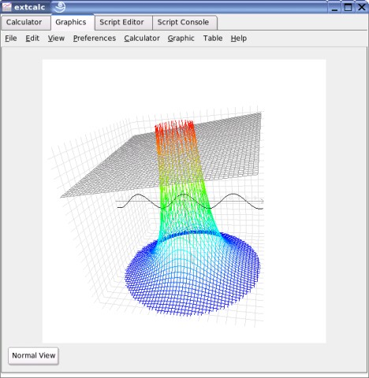

Extcalc - Scientific Calculator
Version 0.6.5
Inhalt
1. Introduction
2. Installation
3. Usage
3.1 Calculator
3.1.1 Standard Mode
3.1.2 Base Mode
3.2 Graphics
3.2.1 Draw Graphs
3.2.2 Analyse Graphs
3.2.3 Screenshots
3.3 Tables
3.4 Script Programming
3.4.1 Introduction
3.4.2 Script Editor
3.4.3 Scripting Language
3.5 Preferences
4. Other
1. Introduction
Extcalc is a scientific graphic calculator for linux. Extcalc is able to process difficult
mathmatical functions, to draw graph and to work with them.
This is the documentation for version 0.6.5.
2. Installation
This description is only for the installation of the source code package (.tar.gz). If you install a binary package, you have to use the
packet manager of your distribution.
- extract packet (tar -xzf extcalc-0.6.5.tar.gz)
- switch to directory (cd extcalc-0.6.5)
- configure (./configure)
- compile (make)
- become root (su)
- install (make install)
Languages
To choose german as installation language, please type "./configure --enable-language_de"
instead of "./configure"
3. Usage
This is a testing version of extcalc. For this reason parts of the user interface may
be demaged.
3.1 Calculator

This Tab is a normal calculator. You can input a calculation in this window
1. Using the keyboard
First click into the text window so that you can see a write cursor there.
Then input the calculation by your keyboard and press Enter to calculate.
You can not use all functions of the calculator with your keyboard.
2. Using the integrated buttons
You can see all possible operations on the buttons of the calculator.
Just click into the text window and push the buttons you need. The text
you type will be inserted at the cursor position. If don't edit the last line,
the content of this line will be copied into the last line.
Press the "="-Button to calculate.
Special keys:
DEL
This is the same as Backspace-key on the keyboard.
AC
This key removes the complete history.
Shift
Press this button to use additional operations
Alpha
Press this button to use variables
hyp
Use this button for hyperbolic functions.
ANS
This is the answer-memory. Use this key to recall the last result.
Calculation Priority:
Highest is first
1. Brackets
2. Special operations: integration, differentiation
3. Binary operators 1: root, power, ...
3. Unary operators: sin, cos, log, ...
4. Bit operations: &, |, ...
5. Binary operators 2: *, /
6. Binary operators 3: +, -
7. Compare operations: ==, !=, ...
8. Set operations: ->, =
9. Logic operations: &&, ||, ...
Syntax - How to input calculation formulas
Root operation
You can use the root operation only with the integrated buttons.
Square Root:
 Sqare root button
Sqare root button
Example: 
 Use brackets for calculations under a root
Use brackets for calculations under a root
To use the square root operation first press the sqare root button an then insert
the argument
For cubic roots use the following buttons:  +
+

Other Roots:
Button for other Roots
Example: 
To use this operation, first type the degree of the root and then type the argument.
Random Number Generator:
Use this operation to generate random numbers
random number key
Example (Number between 0 and 10): 
The number after the "rnd" is the maximum value of the random number.
Differentiation:
The program can only calculate an approximated value of the differentiation.
The Precisision is about +/-1e-8
Use this key for differentiation: 
Example:
Usage: d/dx(function,x-value)
The function parameter must be X. Example: 2X^3-3X+3
The result is the is the gradient of the function at the given x-value.
Integration:
The program can also calculate an approximated value for integration.
An integral calculation will fail if there is a vertical asymptote between start and end point.
The Precisision is about +/-1e-9.
The integral key:
Example:
Usage: Integralsign(function,start value,end value)
The function parameter must be X. Example: sin(X)*3
The area below the graph of "function" between "start value" and "end value" is calculated.
Usage of Variables:
You can use 26 variables to store values. To use the variables by the integrated buttons, press
 + any letter.
+ any letter.
 store a value
store a value
 use stored value
use stored value
A stored value can be used like any other number. Unused variables are set to 0.
Function Catalog
Unary operators with operand right:
-
sin cos tan
asin acos atan
sinh cosh tanh
asinh acosh atanh
log ln
sqrt curt
real imag abs arg conj
! (not)
~
(int) (float) (bool) (string)
Unary operators with operand left:
! (Faculty)
Binary operators:
;
&& ||
-> =
== != >= <= > <
+ - * / %
<< >>
x & |
^
root
Script commands:
if else
while for
print() clear setcursor(,)
sleep()
rnd()
run()
d/dx(,) integ(,,)
getline getkey keystate
break continue stop
brackts:
( )
{}
values:
345
786.899
-76e-8
786i
"lkasdjl"
variables:
A
A[]
A[][]
3.1.1 Standard Mode
This is the mode for normal scientific calculatons. All input and output numbers are decimal floating point numbers.
All scientific functions can be used here. In the quick preferences box, you can choose the angle type for trigonometric
calculatons.
The variables from A to Z can be used to store results.
It is not possible to use non-decimal numbers in this mode and some of the logic functions are disabled.
If you want to use logic functions, choose the base mode and not the normal mode.
3.1.2 Base Mode
When you press the "Mode" button at the calculator window, the calculator switches into base mode. In this mode,
you can't use scientific functions like sinus and cosinus, because the calculator uses 64 bit integer values for
calculaton. The base of the input and output numbers can be changed into hexadecimal, decimal, octal and binary mode.
In base mode, the letters A - F are reserved for hexadecimal numbers, so they can't be used as variables.
But you can use the variables from G to Z to store results in base mode.
This mode is mainly used for logic functions and transformations between the different numeral systems.
If you want to input a number of a numaral system different to the default one, which you can choose with the
quick preferences box, you have to write a special prefix before the number:
Examples:
Hexadecimal: hex0FA46B
The letters in hexadecimal numbers must be uppercase.
Decimal: dec4575
Octal: oct01243
Binary: bin1000101111010
You can see all logic functions, which you can use in base mode, on the calculator keys. You can press shift key
to use additional logic functions.
The following functions can be used:
Logic functions:
These functions return only true or false as a result. 0 is false and everything different ot 0 is true.
&& (and), || (or), ! (not)
Binary functions:
These functions modify every single bit of a number.
& (and), | (or), ~ (not), << (left shift), >> (right shift), xor
3.2 Graphic
In this window of Extcalc, you can draw and analyse different function graphs.
You can choose different types of graphs and different types of coordinate systems.
This is a short list of the availables types of graphs with a short description:
Graph Types
Standard Graphs y(x)=X
This is the standard for drawing function graphs. This type draws a normal 2D-Graph. The function variable
is X (a lowercase x can also be used).
Polar Graphs r(x)=X
this is also a 2D graphic mode, but it uses a polar coordinate system. X represents the angle and r is the
radius of the angle X. For this type of function, a polar coordinate system should be used.
Parameter Graphs x(T)=T; y(T)=T
This is a special type of 2D function. The function variable T doesn't exist at the coordinate system.
A parameter function contains two functions; one for the X-coordinate and one for the Y-coordinate.
Both functions have the same variable T. You can set the range of the variable T in the graphics preferences dialog.
Inequaity Graphs y(X) > X, y(X) < X, y(X) >=X, y(X) <=X
When you use this type of graph, the area in which the function is true will be colored.
3D Graphs y(x,z)=XZ
This is the graph type for standard 3D-graphs. You need a 3D-coordinate system to show this type of graph.
The 3D-function contains the two variable X and Z. The Y-coordinate is calculated by this function containing X and Z.
Nyquist plots and 3D-Nyquist plots Y=Zi+Z
Both graph types can be used to show complex function graphs. The X-Axis represents the Real part of Y and the Y-Axis shows
the Imaginary part of Y. The function parameter ist always Z. But at the normal Nyquist plot, the range of Z must be set by the
graph preferences dialog. At the 3D-Nyquist plot, the Z range is equal to the Z range of the coordinate system. Thist type of
Nyquist plot shows the Z-Value as a third Axis.
Dynamic graphs
All above described types of graphs can be used in a dynamic mode. For this dynamic graphs, an extra parameter A must
exist in your function. This parameter depends on the time. So you can show moving graphs.
This type of graphs needs much graphics performance, so you may need a 3D-Card for using this type of graphs.
Coordinate Systems
It is possible to draw every type of graph in every coordinate system, but some combinations don't make sense.
Standard Coordinate System
This is normally used for standard graphs and also for parameter graphs. It is a cartesian 2D coordinate system
with x-axis and y-axis. Both can be negative and positive. You can set a stadard size and a trigonometric size for
the coordinate system. This coordinate system can be moved by holding the right mouse button and moving the mouse,
and it can be zoomed with the mouse wheel.
Polar Coordinate System
This coordinate system is mainly used for polar graphs. It has a maximum angle and a maximum radius, which can be
set at the graph preferences dialog. Both, maximum angle and maximum radius can only be positive and start at 0.
The coordinate system can be zoomed with the mouse whell.
3D Coordinate System
This is the coordinate system for 3D-graphs, but it can also be used for all other types of graphs. It is a
cartesian 3D coordinate system, which has x-axes, y-axes and z-axes. They all can be positive and negative.
The x-coorinate is horizontal, the y-coordinate is vertical and the z-coordinate is the deep. The 3D-coordinate
system can be zoomed by the mousewheel and it can be rotated by pressing the right mouse button and moving the
cursor.
3.2.1 Draw Graphs

The graphics window of Extcalc consists of three partes: function table, output window and keyboard.
Function Table
In the first column of the table, you can insert all functions you need to draw. You can insert up to 20
functions here.
If you want to show the function graphs in different colors, you can choose colors in the second column of
the table. The function is shown in the chosen color and the graph will also be drawn in this color.
If you don't want to draw all functions of the function table, you can turn some functions off. To activate
and inactivate functions, just klick into the checkboxes of the third column.
In Extcalc, you can use different function types, which you can choose in the fourth column. Here you can
choose normal functions, polar functions, parameter functions, 3D-Functions and inequaities. You can
also draw different types of functions at the same time, but you can only draw them into one coordinate system.
In the last column, you can switch the function to a dynamic function.
Output Window
If you press the print button, the graphs of all active fuctions will be drawn at the output window. You can choose
one type of coordinate system for your output window at the graphics menu or at the graphic preferences dialog.
3.2.2 Analyse Graphs

If you want to analyse graphs, you can press the analyse button.
This will switch the graphics window into analysation mode where you can analyse your graphs.
Just choose one from the menu.
All analysation methods expect Newton, integration and differentiation analyse only the the part of the graph
which is shown in the output window.
You can only analyse the type of functions matching with your coordinate system type.
This means, if you want to analyse standard 2D-graphs, parameter graphs or graphs of
inequaity functions, you will have to choose a cartesian 2D-coordinate system. If you
want to analyse polar functions, you will need a polar coordinate system and if you want
to analyse 3D-graphs, you will have to choose the cartesian 3D-coordinate system
The function type, which you want to analyse, can be chosen at the box below the function table.
Not all function types have the same analysation options. The table below
shows you the different analysation methods and the function types needed for
this methods.
| standard | polar | parameter | inequaity | 3D-graph | Nyquist plot |
| Calculate Y-value | x | x | x | x | x | x |
| Calculate roots | x | x | x | x | | x |
| Newton's Method | x | x | | x | | |
| Calculate X-values | x | x | x | x | x | x |
| Points of Intersection | x | x | | x | | |
| Maximum and minumum values | x | x | | x | | |
| calculate integral | x | x | | x | x | |
| calculate differential | x | x | x | x | x | |
| Calculate Z-value | | | | | x | |
Here is a short description of the analysation methods:
Calculate y-value:
Insert a x-value into the input line or klick into the graphics output window where you want to calculate
the y-value. Then press the calculate button. The y-value of all displayed graphs will be shown in a table.
Parameter graphs may have more than one y-value with the same x-value. At 3D-Graphs you have to insert
x-value and z-value to calculate the y-value
Calculate Roots:
Choose a function from the function box and press the calculate button to calculate the roots of a function.
Newton's Method:
This is a special method of calculating roots. You can set a start value for the calculation and the number
of steps to calculate. All results will be shown in the table. The first item in the last line is your result.
Calculate x-values:
Choose a function from the box and type the y-value you want into the input line. When you press the calculate
button, the x-values are shown in the output table. For 3D-graphs, the y-value is also needed for calculation.
Points of intersection:
Choose two graphs from the boxes and press the calculate button. Then the points of intersection of the two
graphs are shown. Don't choose two times the same function.
Maximum and minimum values:
Choose a graph and press the calculate button and then all extreme values will be calculated.
Integral Calculation:
Just set a start point and an end point, then you can integrate the cosen function. The size of the area between the graph and
the x-Axis is calculated. In 3D-Mode, you have to set X-Start, X-End, Z-Start and Z-End points for integration. The volume between the
X-Z-Plane and the graph is calculated.
Differential Calculation:
For a differential calculation, you must choose a function and the point to calculate, then press the calculate
button. It is also possible to calculate the cartesian differentiation of a parameter function. For 3D-Functions, you have to set a
X- and a Z-Value. All partial differentials at the given point were calculated.
Calculate z-values:
Choose a function from the box and type the x-value and the y-value into the input fields.
Pressing the calculate-button will show you the results.
3.2.3 Screenshots
If you choose the point Screenshot/Drawing in the box below the graphics area, you can save Screenshots and draw into the graphics window.
Saving a screenshot
In the window, shown above, you can save a screenshot of the graphics window. Before saving, you can change some options. You can set the size of
the picture, the image format and the file name. If you have set this, press the Save-button to save the image.
Drawing
If you want to point out something in the screenshot or if you want to make an annotation, Extcalc provides some drawing tools.
The drawing area is independent from the graphs and the coordinate system. That means, when you change the coordinate system or redraw graphs,
the drawed part will not move or disappear.
The drawing functions have a preview mode. While you hold down the mouse button, you can only see a preview. The final view will be generated when you
release the mouse button.
You can use several standard tools: free drawing, line, rect, circle
At them, you chan change width and color.
Text drawing: If you press the text button, you will se an input dialog where you can set the text to draw.
When you hold down the left mouse button, you can also see a preview. If you press the mouse button again, the text will be inserted again.
To change the text, text size or color, you have to press the Text-button again.
Rubber: If you want to erase a part of the drawn things, you can use this tool. It makes the erased areas transparent. In preview mode, it is shown white.
Furthermore, you have an undo button and a button to clear the complete draw area.
3.3 Tables
In Extcalc, it is also possible to generate tables from functions.

The table window of Extcalc.
For the generation of this value tables, the same functions as for graphs will be used. You can generate tables
from every types of functions.
The tables are generated from this functions, which are activated in the function table. You can also calculate
only tables from the type of functions, which is chosen for tables. You can choose the table function tye directly
with the box in the table window or by the table menu or by the table preferences dialog.
In the table preferences dialog, you can set the start and the end value for your table and you can choose the
number of values to calculate.
For functions with the variable x, on column per function is generated with the function values. For parameter
functions with the variable T, the same options as for the variable x are used. For every functions of this type,
one column with x-values and one column with y-values will be generated. If you generate a table with 3D-fuctions,
for every z-value of every function, one column will be generated.
3.4 Script Programming

Extcalc contains a script interpreter for running small scripts. You can edit and run this scripts directly with Extcalc.
3.4.1 Introduction
The syntax for Extcalc scripts is similar to the C syntax, but the normal calculator commands and operations can also be used in this scripts.
You can't use script command in the normal calculator. The scripts programs run in a seperate console, and you may the other extcalc functions
while running a script. Scripts can be managed, edited and started from the integrated script editor.
In this version 0.6.5 are not all planned features included.
3.4.2 The Script-Editor
The integrated script editor has all important editor functions and you can use it to write, modify and run your scripts.
Before you can use this editor, you have to create the script directories. Normally, this is done at the first start of extcalc, but if you
haven't done it there, you may need use the script preferences dialog from the preferences menu to create them.
There you have to create a script root directory and set the names for a code subdirectory and a data subdirectory.
Create a New Script:
To create a new script you just need to write into an empty editor window and press the "Save"-Button, or you press the right mouse button
in the file list and choose "Create New Script".
The new file will then be shown in the editor window.
Load and Save Scripts:
To load a saved script, just choose it at the file list. The code will be shown in your editor window. If you have modified another code before,
this code will be marked as modified in the file list, but the changes will not be written to the disk.
If you want to save the current code, just press the "Save"-Button
If you want to save any other modified code, you can choose the code with the right mouse button at the file list and coose "Save" so save it.
If you want to save all modified codes, press the right mouse button at the file list and coose "save all".
Before closing Extcalc, you were asked if you want to save all your codes, if you have not saved any changes.
Managing files:
Subdirectories:
You can create subdirectories in your script directory to save your scripts there.
Renaming:
You may also rename your scripts, but drag and drop for moving files is currently not available.
Removing:
You can also remove your code files and subdirectories, but you can remove directories only if they are empty.
Changes without Extcalc:
You can also modify your script files and directories without Extcalc. If is running while you change something, you can press the right mouse
button at the file list and choose "Update" to see your changes in Extcalc.
Running Scripts:
To run a script, just coose it from the file list and press the "Run"-Button.
Then, the script will be translated and the active window switches to the script console.
In the script console, you can see the interpreter errors. If the script was tanslated without errors, you can press the run-button to run the script.
It is not possible, to run two scripts at the same time. If you start another script while one is running, you were asked, if you want to
kill the currently running script.
You can always stop a running script by pressing the "Kill"-Button at the script console window.
If the script does not stop before the timeout, an error message is displayed. You have to press the kill-button again to stop the script correctly.
3.4.3 Scripting Language
In version 0.6.5 of Extcalc, not all features are included. You can read more about the planned features
at Chapter 4.
Problems:
This is a list of the current problems of the 0.6.5 version of the Extcalc Script Interpreter
1. Speed
The extcalc scripts were ran by an Interpreter and so they run not as fast as compiled programmes, but it will be optimized in later versions.
2. Variables:
You can use the uppercase letters from A to Z as variables. Every variable can also be used as an Array.
3. Features
Most of the planned features is available, now, but this is only a calculator script interpreter that can be used to solve simple mathematical problems.
It will never have the flexibility and power of a complex programming language like C.
4. Stability
The Script interpreter is in an early development state and it may not always run without problems.
Syntax:
The syntax of the Extcalc Script interpreter is similar to the C syntax.
Main Rules:
- Every command ends with a ; semicolon
- Behind loops and conditions directly follows the command to run, and no semicolon
- If you want to run more than one command in a loop or a condition, you have to write this commands in braces {}.
- It is possible to use mathematical operations in the code. Tey are also finished with the semicolon.
- You can insert newlines, tabs and spaces everywhere in your code.
- The whitespace will be removed befeore running the script.
- It is possible to use C++-like comments //. Everything in this line after the slash signs will be ignored.
- Cou can't use the C-Comments /* ... */ int your scripts
- The compare operator is written like in C with ==, the single = operator is the set-operator
- If you want to use a Variable as an Array, use the Index-Operator with it. Example: A[3]=5;
- It is not possible to use functions. The commands are written directly into the code file.
- it is possible to execute another script file by the run() command.
Error Messages:
If you want to run a script in Extcalc, your script code is first processed by an script interpreter. This script interpreter generates
a executable object in the memory without executing it. This object can be ran as often as you want.
If this script interpreter is unable to process your code, it prints out an error message and the line, where the error was found.
But the interpreter doesn't have the original code format, so it can't exactly say, where to find the error in the code. The line number, which
the interpreter shows is calculated by searching for the semicolons in the code, so it may be that the shown error is above the shown line number.
Sometimes, the script interpreter may not find an error in the script. This is mainly, when the error is in an mathematical operation.
If the console shows the error message "Preprocessor Error", it was unable to run the script interpreter. This may be because the file is empty, or because
the file does not contain anything translatable, or if the code contains a backlash outside of a string.
Variables:
You can use the uppercase letters from A to Z as variables.
This variables may be initialized directly in the code, or.
The variables are not pre-initialized, so the content is not defieed. But they can always be used without initialisation.
The variables can contain different types of content. The variable type may change in the runnung program.
The following types are available:
float: floating point number of type long double (size depends on the system, normally 10 Bytes)
int: integer number of type long long (8 Byte)
bool: boolean value of type bool (can be true or false)
string: Text of type char* (length is variable, allocating and freeing is made by the interpreter)
If you set a variable with a floating point value, it will be of type float.
If you insert a integer value into the variable, it will be of type int.
Results from logic operations are of type bool.
Text, and input from the user is of type string.
If an operation fails, the variable will be set to NONE.
Every variable type contains a correct floating point value for compatibility with the normal calculator algorithms.
Arrays:
Every variable can also be used as an Array. The normal value of the Array-Variable is stored at index 0. If you use a Variable
without Index-Operator, you also use the elment with index 0. A=5 ist the same as A[0]=5. More-deminsional Arrays were not supported in
this Version. Only if you want to access a single character from a string you have to use two index-operators [ ][ ]. For example, A[3][1] is the
second character of the fourth String. You always have to use two indexes, when you need access to the characters of a string, even if the String
is not part of an Array. Then you have to set the first index to 0, for example A[0][4].
Commands:
The following basic commands can be used for programming:
1. If
Syntax:
if( condition )
command for condititon true;
else
command for condititon false;
If you want to run more commands, they must be written in braces (without semicolon at the end).
Example:
if(A==5)
A=7;
else
{
A=A+1;
if(A>10)
A=0;
}
2. While
Syntax:
while( condition )
command that is ran while condititon true;
If you want to run more commands, they must be written in braces (without semicolon at the end).
If the loop should run all time, you can write while(1), but you always have to set a contition
Example:
F=0;
while(F==0)
{
F=keystate;
sleep(10000);
}
3. For
Syntax:
for(initialisation; condition; count-command)
command that is ran while condititon true;
If you want to run more commands, they must be written in braces (without semicolon at the end).
At initialisation, you can set the counter variable to the start value.
The loop runs, as long as the condition is true.
The cout-command is executed in every run. It can be any command.
If you don't need the initialisation or the condition, you can only type a semicolon. If you don't need the count-command
you can leave it out.
Example:
for(A=-4;A<0;A+1->A)
print(A);
for(;;)
print("this runns always");
4. Print
Syntax:
print( Output );
Output can be a variable, a command or a constant (like text).
You can only set one input.
Example:
A=12;
print(A+3); //Output: 15
print("Hello World!\n"); // Text with newline at the end
print(3>5); //prints out false
5. getline
Syntax:
getline;
This command does only make sense, if you use the return value.
Example:
X=getline;
print(X);
//or:
print(getline);
6. getkey
Syntax:
getkey;
This command does only make sense, if you use the return value.
It blocks the program until you press any button.
The return value is a string and you may need to convert it.
Example:
F=0;
while(F!=97) //loop runs, until you press a
{
F=getkey;
F=(int)F;
}
7. Keystate
Syntax:
keystate;
This command does only make sense, if you use the return value.
It doesn't block the program.
If no butten was currently pressed, it returns 0.
The return value is a string and you may need to convert it.
Example:
F=0;
while(F!=97) //Loop runs, until you press a
{
F= keystate;
F=(int)F;
sleep(10000); //break
if(F==0)
print("Press a to stop\n"); //This text is always printed
}
8. Sleep
Syntax:
sleep( Time in microseconds );
The script is stopped for the given time.
If you want to make a program run slower, you should use this command and no empty loop.
A program that interacts with the user or a program that prints very much should use this command because
otherwise the script console may not have enough cpu time to show to show its content on time.
An example can be found at the keystate command.
9. type converting
Syntax:
(target type)variable;
target type must be one of (int) (float) (string) (bool) sein.
You can also use them with constants.
Example:
A=12.3545;
A=(int)A; // A is now 12
print((int)"abc"); //abc can not be convertet to a number, so it is set to 97 (ASCII-Code of a)
C="234.45";
D=(float)C; //text can be interpreted as number, so it is set to the value
print(D+1); //prints 235.45
10. Running subprograms
Syntax:
run("script path");
With this command, you can execute another code file from your script.
The script path must be relative to the script code directory.
The script path must be hard coded in your script code
With this command, it is also possible to program a recursive algorithm. But you should not do that, because this
may lead to a stack overflow and the program will crash. The script interpreter can not prevent this crash.
Example:
run("subprogram"); //runs a subprogram with the name subprogram that is in the script code directory
runt("prog/routine4"); //runs a subprogram with the name routine4 which is in the directory prog
11. Arrays
Syntax:
Variable[index]; //normal array
Variable[string-index][character-index]; //character in a string
Every variable can also be an array, if you use the index-operator on it
Without index-operator, you always access the element with index 0.
If you want to access a single character of a string, use the syntax as described above.
You also have to use this syntax if the string isn't part of an array, then the string-index is 0.
Example:
A=" ";
for(C=9; C>=0; C=C-1) //reads 10 characters
A[C]=getkey;
print(A); //prints the characters inverted
12. Possible Operators
Operator List
In script interpreter integrated operators (can be used with every variable type)
+ add
- sub
== compare
!= unequal
> greather
< less
>= greather or equal
<= less or equal
&& logic and
|| logic or
! logic not
= set (like in C)
-> set (like in Calculator)
[] index operator
All other operators can be used like in the calculater.
The operators can also be used together.
12.3545->A;
(int)A->A; // A is now 12
print((int)"abc"); //abc can not be convertet to a number, so it is set to 97 (ASCII-Code of a)
"234.45"->C;
(float)C->D; //Text can be convertet do a number, so D is set to this value
print(D+1); //prints 235.45
Example codes:
Example 1:
Prime number generator
//loop starts at 3 (so it can add 2 instead of 1 per step)
print("2 ");
for(3->A;;A+2->A)
{
0->C;
sqrtA->D;
//prime number check with modulo
for(2->B; C==0 && B<=D; B+1->B)
{
if((A%B)==0)
1->C;
}
if(C==0)
{
print(A);
print("\t");
}
}
Example 2:
A ping pong game
//initialization
//variables for ball movement
4->A;
1->B;
1->C;
1->D;
//variable for player movement
10->E;
//stop variable
0->S;
//counter for ball movement
//the ball moves only ervery fifth run
0->I;
//variables to store old drawing coordinates
//needed that it redraws only if needed
//and that the screen can be cleared without
//flickering
4->G;
4->H;
9->J;
0->X;
clear;
for(;S==0;I+1->I)
{
//move ball every fith time
E->J;
if(I==5)
{
0->I;
A->G;
B->H;
A+C->A;
B+D->B;
if(A>50)
-1->C;
else if(A<1)
1->C;
if(B<1)
1->D;
else if(B>12)
{
if(A>E-3 && A<E+3)
{
-1->D;
X+1->X;
}
else 1->S;
}
//long break for ball movement
sleep(30000);
}
//read keystate and move player
keystate->K;
1+K-1->K;
if(K==100 && E<48)
E+1->E;
if(K==97 && E>2)
E-1->E;
//short break
//needed that player can move fast
sleep(5000);
//print ball if needed
if(A!=G || B!=H)
{
setcursor(G,H);
print(" ");
setcursor(A,B);
print("*");
}
//print payer if needed
if(E!=J)
{
if(E>J)
{
setcursor(J-2,14);
print(" ");
setcursor(E-2,14);
print("#####");
}
else
{
setcursor(J+2,14);
print(" ");
setcursor(E-2,14);
print("#####");
}
}
//print score
setcursor(51,1);
print(X);
}
//loop finished
//because player didn't get the ball
//print score
sleep(300000);
clear;
print("\n\n\n***********End************\n");
print("********Points: **********");
setcursor(16,4);
print(X);
print("\n\n");
3.5 Preferences
Preferences can be changed directly by using the menu item "Calculator" for calculator preferences
and the item "Graphic" for the preferences of the graphics window or
by the preferences dialogs. You find them at the "Preferences"
menu-point.
4. Other
Precision
The maximum precicion of Extcalc on a 32-bit PC-Processor is 18 decimal digits
because it uses double-variables for calculation. Because of the architecture of a normal
PC-Processor, the last digit is often calculated wrong.
The precision of the integration-operation is about 9 digits and the precision of the
differentiation-operation is about 8 digits depending on the formula to calculate.
The precision of trigonometric functions and logarithms is about 17 digits.
enabled features
User Interface for calculator
User Interface for graphics
parser for calculations
drawing graphs
working with graphs
integration, differentiation
base-n calculations
logic functions
3D-Graphs
dynamic graphs
most scripting functions
script debugging
zooming and moving graphics
saving screenshots
drawing into graphics window
complex numbers
Todo-list
scripting functions for graph drawing and file usage
matrix calculation
vector calculation
statistic functions
Tested Distributions:
| Suse Linux 8.2: | OK |
| Suse Linux 9.2: | OK |
| Suse Linux 10.1: | OK |
| Debian 3.1 Sarge: | Update needed |
| Debian Etch: | OK |
| Ubuntu Linux 5.10: | OK |
| Ubuntu Linux 6.06: | OK |
| Mepis Linux 6.0: | OK |
| Mandriva 2006: | OK |
| Slackware 10: | OK |
| Fedora Core 3 (64Bit): | OK |
| Fedora Core 4: | Update needed |
| Fedora Core 5: | OK |
| OpenBSD 3.9: | several problems |
Debian 3.1 Sarge
The installer works and the program can be started, but the graphics window doesn't work.
If this problem esists, you will have to install the updates for your X and OpenGL packets.
Fedora Core 4
The Installer runs without problems, but if the program is started, it stops immediately with
segmentation fault.
This error is caused by the linker of FC4, which generates a wrong ELF header.
This bug can be fixed by an update for gcc and g++. The program will work if you install this
updates before installation.
OpenBSD 3.9
In general, the Extcalc code runs on an OpenBSD 3.9 if QT is installed.
But during the tests on this system, several problems occured.
1. At the installation of QT on OpenBSD, no link for libqt-mt is set. So the linker-run fails if you don't set this link.
2. The environment variables for QT were not properly set. You have to do this as the QT-Help describes it.
3. The pkg-config data for the qt- and gl-libraries is not included in OpenBSD, so you can't use the configure script to install.
You have to install Extcalc manually. To compile the code, you have to switch to the src directory and run qmake -o Makefile extcalc.pro
there. This will generate a Makefile, so you can run make to generate a running binary file.
Because of all this problems, it is better to wait until a binary package of Extcalc is available.
Needed software:
Linux
GCC 3 or GCC 4 (dosn't work on GCC 2.xx)
QT3.1 or higher (no QT 4)
OpenGL
Needed hardware:
CPU at about 1GHz (32Bit or 64Bit)
enough RAM to run X
For 3D-graphics, a 3D-graphics card is recommended
A mouse with mousewheel is needed for zooming, moving and rotating graphs